Lista cięć, rozkrój i oferta
Narysuj okno, a Fenestro poda listę cięć z kątami, wymiar szyby, okucia i rozkrój sztang 6 m z odpadem. Oferta w PDF w kilka minut, bez konta.
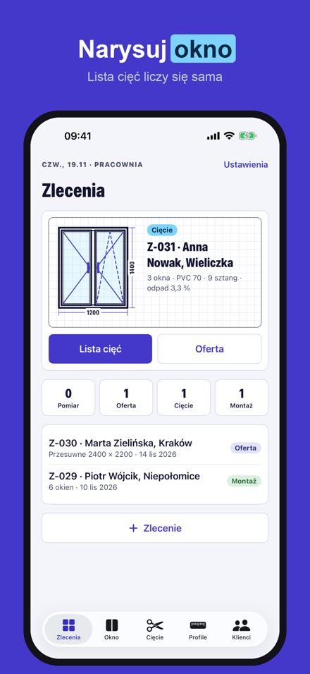
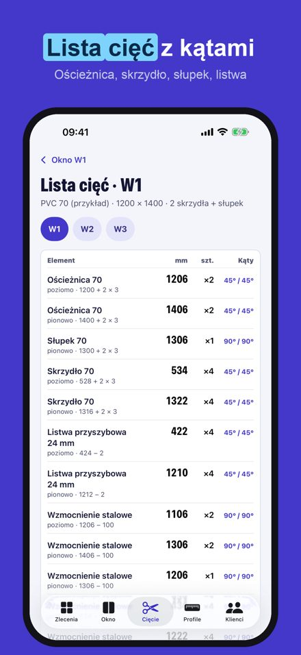
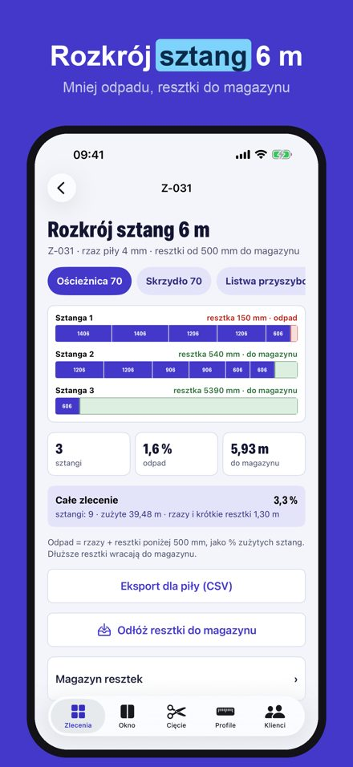
Fenestro to warsztat okienny w iPhonie dla wytwórców i monterów stolarki PVC i aluminiowej. Rysujesz okno: wymiary, podział na skrzydła, słupek i kierunek otwierania. Fenestro liczy z Twojego szablonu systemu odcinki ościeżnicy, skrzydeł, słupka i listew z kątami cięcia, wymiar szyby i listę okuć, układa odcinki na sztangach 6 m z najmniejszym odpadem i przygotowuje ofertę w PDF oraz kartę warsztatu.
Bez subskrypcji: 3 zlecenia, szablony jedno- i dwuskrzydłowe, lista cięć, szyby i okucia, oferta PDF ze znakiem wodnym. Fenestro Plus to subskrypcja miesięczna lub roczna (z okresem próbnym przy rocznej): okna przesuwne, rozkrój sztang z magazynem resztek, bez limitu zleceń, PDF bez znaku wodnego, własne profile i eksport CSV dla piły. Odnawia się automatycznie, anulujesz w ustawieniach konta Apple. Bez reklam i konta.
Fenestro to niezależne narzędzie, niezwiązane z producentami profili, okuć ani szyb. Szablony zawierają przykładowe wartości: przed cięciem wpisz potrącenia z dokumentacji swojego systemu i sprawdź pierwsze okno. Za wymiary i ceny odpowiada wykonawca.
Debitare, optimizare, ofertă
Desenează fereastra, iar Fenestro îți dă debitarea cu unghiuri, geamul, feroneria și optimizarea barelor de 6 m. Ofertă PDF în câteva minute, fără cont.
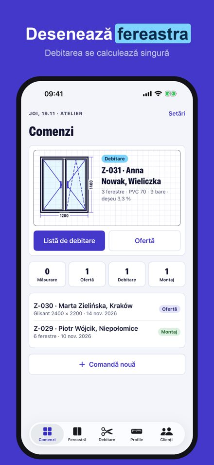
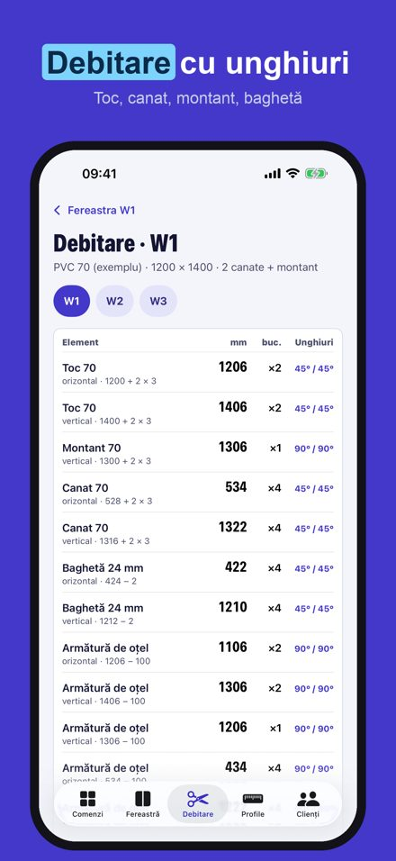
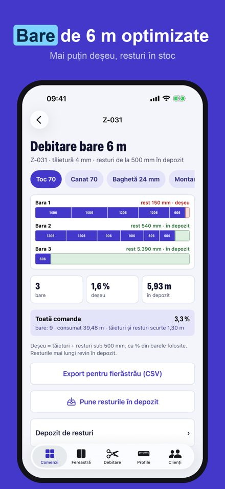
Fenestro este atelierul de tâmplărie din iPhone pentru producătorii și montatorii de ferestre din PVC și aluminiu. Desenezi fereastra: dimensiuni, canaturi, montant și sensul de deschidere. Fenestro calculează din șablonul sistemului tău tocul, canaturile, montantul și baghetele cu unghiurile de tăiere, dimensiunea geamului și lista de feronerie, așază piesele pe bare de 6 m cu deșeu minim și pregătește oferta PDF și fișa de atelier.
Fără abonament: 3 comenzi, șabloane cu un canat și cu două canaturi, lista de debitare, geam și feronerie, ofertă PDF cu filigran. Fenestro Plus este un abonament lunar sau anual (cu perioadă de probă la cel anual): ferestre glisante, optimizarea barelor cu stoc de resturi, comenzi nelimitate, PDF fără filigran, profile proprii și export CSV pentru fierăstrău. Se reînnoiește automat; anulezi oricând din setările contului Apple. Fără reclame, fără cont.
Fenestro este un instrument independent, fără legătură cu producătorii de profile, feronerie sau geam. Șabloanele conțin valori de exemplu: înainte de tăiere introdu deducțiile din documentația sistemului tău și verifică prima fereastră. Răspunderea pentru dimensiuni și prețuri aparține executantului.
Distinta taglio e preventivo
Disegna la finestra e Fenestro calcola la distinta di taglio con gli angoli, il vetro, la ferramenta e le barre da 6 m con lo sfrido. Preventivo PDF, senza account.
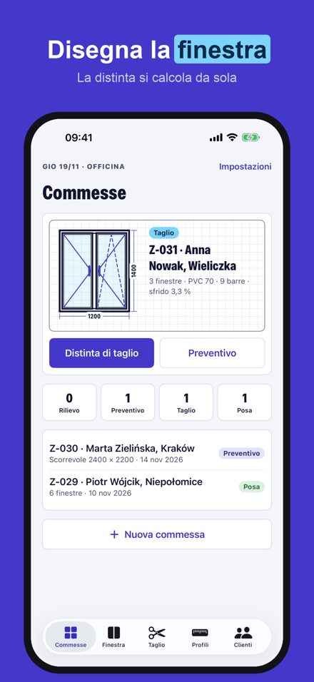
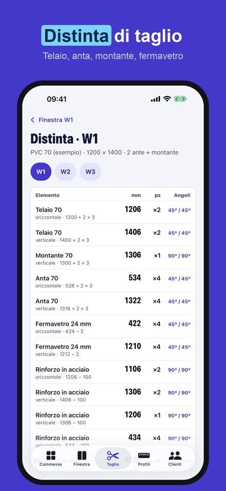
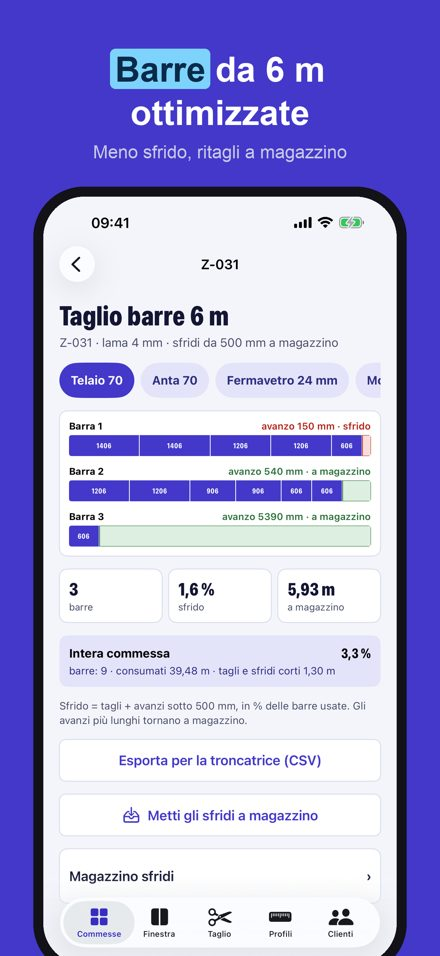
Fenestro è il laboratorio del serramentista sull’iPhone, per chi produce e posa finestre in PVC e alluminio. Disegni la finestra: misure, ante, montante e senso di apertura. Fenestro calcola dal modello del tuo sistema telaio, ante, montante e fermavetri con gli angoli di taglio, la misura del vetro e la lista della ferramenta, dispone i pezzi sulle barre da 6 m con il minimo sfrido e prepara il preventivo PDF e la scheda di officina.
Senza abbonamento: 3 commesse, modelli a un’anta e a due ante, distinta di taglio, vetri e ferramenta, preventivo PDF con filigrana. Fenestro Plus è un abbonamento mensile o annuale (con prova sull’annuale): scorrevoli, ottimizzazione barre con magazzino ritagli, commesse illimitate, PDF senza filigrana, profili propri ed export CSV per la troncatrice. Rinnovo automatico, disdici quando vuoi nelle impostazioni dell’ID Apple. Nessuna pubblicità, nessun account.
Fenestro è uno strumento indipendente, senza legami con produttori di profili, ferramenta o vetro. I modelli contengono valori di esempio: prima di tagliare inserisci le detrazioni della documentazione del tuo sistema e verifica la prima finestra. Misure e prezzi restano responsabilità di chi esegue il lavoro.
Despiece, cortes y presupuesto
Dibuja la ventana y Fenestro calcula el despiece con ángulos, el vidrio, los herrajes y las barras de 6 m con su merma. Presupuesto en PDF en minutos, sin cuenta.
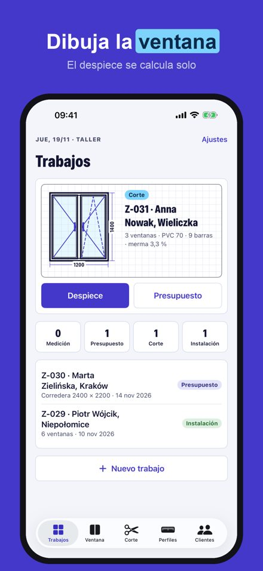
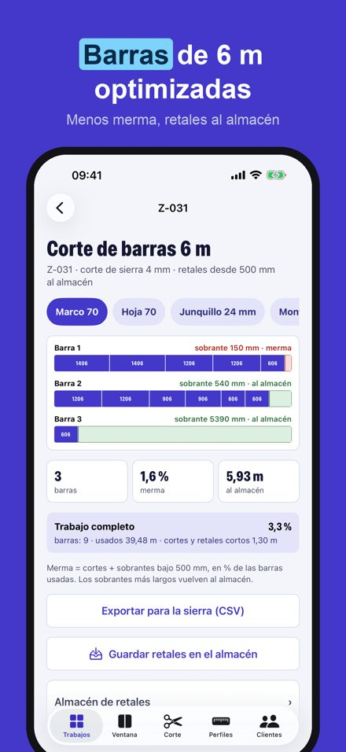
Fenestro es el taller de carpintería de ventanas en el iPhone, para quien fabrica e instala ventanas de PVC y aluminio. Dibujas la ventana: medidas, hojas, montante y sentido de apertura. Fenestro calcula con la plantilla de tu sistema el marco, las hojas, el montante y los junquillos con sus ángulos de corte, la medida del vidrio y la lista de herrajes, coloca las piezas en barras de 6 m con la mínima merma y prepara el presupuesto en PDF y la hoja de taller.
Sin suscripción: 3 obras, plantillas de una y dos hojas, despiece, vidrios y herrajes, presupuesto PDF con marca de agua. Fenestro Plus es una suscripción mensual o anual (con prueba en la anual): correderas, optimización de barras con almacén de retales, obras ilimitadas, PDF sin marca de agua, perfiles propios y exportación CSV para la sierra. Se renueva automáticamente; cancela cuando quieras en los ajustes del ID de Apple. Sin anuncios, sin cuenta.
Fenestro es una herramienta independiente, sin relación con fabricantes de perfiles, herrajes o vidrio. Las plantillas contienen valores de ejemplo: antes de cortar introduce los descuentos de la documentación de tu sistema y comprueba la primera ventana. Las medidas y los precios son responsabilidad de quien ejecuta el trabajo.
Λίστα κοπής, βέργες, προσφορά
Σχεδίασε το παράθυρο και το Fenestro βγάζει λίστα κοπής με γωνίες, τζάμι, μηχανισμούς και βέργες 6 m με τη φύρα. Προσφορά PDF σε λίγα λεπτά, χωρίς λογαριασμό.
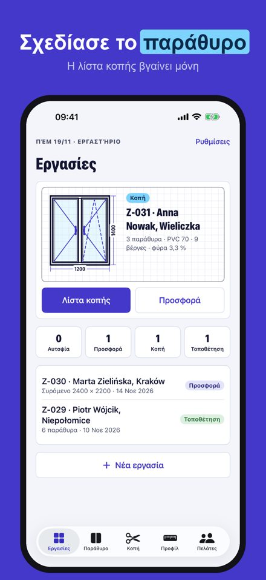
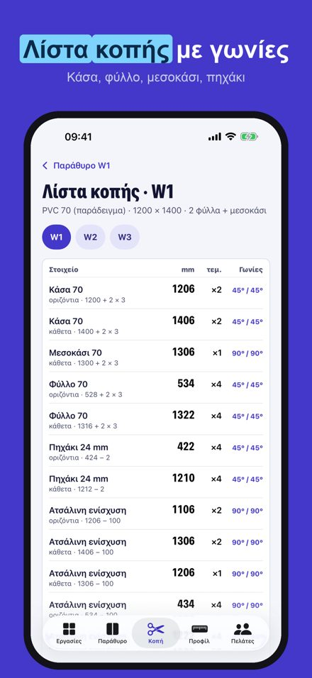
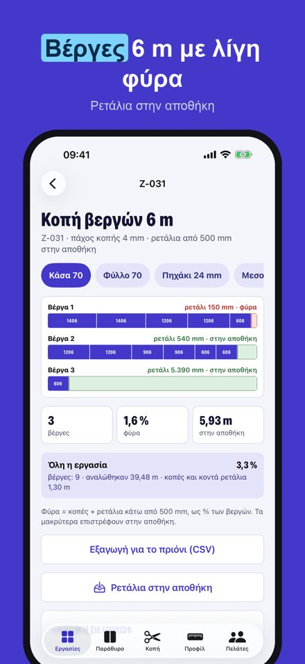
Το Fenestro είναι το εργαστήριο κουφωμάτων στο iPhone, για όσους κατασκευάζουν και τοποθετούν κουφώματα PVC και αλουμινίου. Σχεδιάζεις το παράθυρο: διαστάσεις, φύλλα, μεσοκάσι και φορά ανοίγματος. Το Fenestro υπολογίζει από το πρότυπο του συστήματός σου κάσα, φύλλα, μεσοκάσι και πηχάκια με τις γωνίες κοπής, τη διάσταση του τζαμιού και τη λίστα μηχανισμών, τοποθετεί τα κομμάτια σε βέργες 6 m με την ελάχιστη φύρα και ετοιμάζει την προσφορά PDF και το φύλλο εργαστηρίου.
Χωρίς συνδρομή: 3 έργα, πρότυπα μονόφυλλα και δίφυλλα, λίστα κοπής, τζάμια και μηχανισμοί, προσφορά PDF με υδατογράφημα. Το Fenestro Plus είναι μηνιαία ή ετήσια συνδρομή (με δοκιμαστική περίοδο στην ετήσια): συρόμενα, βελτιστοποίηση βεργών με αποθήκη ρεταλιών, απεριόριστα έργα, PDF χωρίς υδατογράφημα, δικά σου προφίλ και εξαγωγή CSV για το πριόνι. Ανανεώνεται αυτόματα· ακυρώνεις όποτε θέλεις από τις ρυθμίσεις του λογαριασμού Apple. Χωρίς διαφημίσεις, χωρίς λογαριασμό.
Το Fenestro είναι ανεξάρτητο εργαλείο, χωρίς σχέση με κατασκευαστές προφίλ, μηχανισμών ή τζαμιών. Τα πρότυπα έχουν ενδεικτικές τιμές: πριν την κοπή βάλε τις αφαιρέσεις από την τεκμηρίωση του συστήματός σου και έλεγξε το πρώτο παράθυρο. Για διαστάσεις και τιμές ευθύνεται ο κατασκευαστής.
Cutting list, bars and quotes
Draw the window and Fenestro gives you the cutting list with angles, glass size, hardware and 6 m bar plans with waste. A PDF quote in minutes, no account.
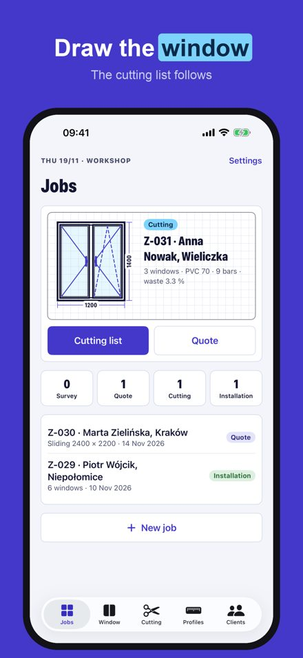
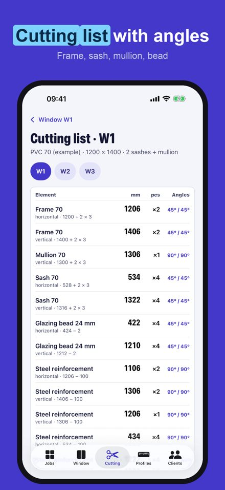
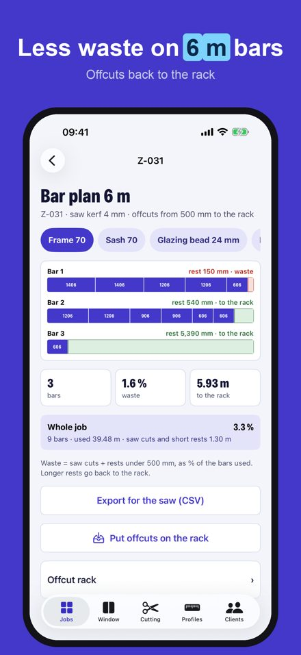
Fenestro is the window workshop on your iPhone for fabricators and installers of uPVC and aluminium windows. Draw the window: size, sashes, mullion and opening direction. From your own system template Fenestro works out frame, sash, mullion and glazing bead lengths with their cutting angles, the glass size and the hardware list, lays the pieces out on 6 m bars with the least waste and prepares a PDF quote and a workshop sheet.
Without a subscription: 3 jobs, single and double sash templates, cutting list, glass and hardware, PDF quote with a watermark. Fenestro Plus is a monthly or yearly subscription (trial on yearly): sliding windows, bar optimisation with an offcut store, unlimited jobs, PDF without watermark, your own profiles and CSV export for the saw. Renews automatically; cancel anytime in your Apple Account settings. No ads, no account.
Fenestro is an independent tool, not affiliated with any profile, hardware or glass manufacturer. Templates hold sample values: before cutting, enter the deductions from your own system documentation and check the first window. The fabricator remains responsible for sizes and prices.